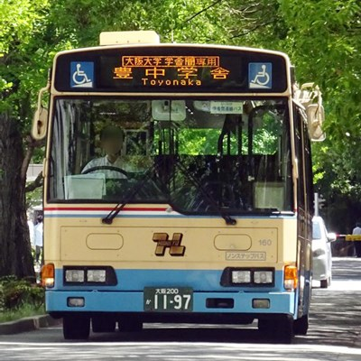
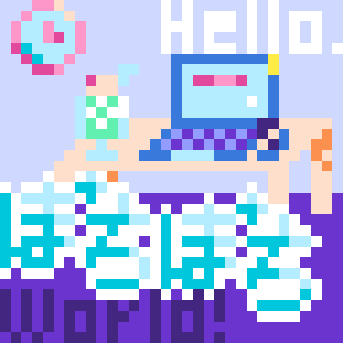
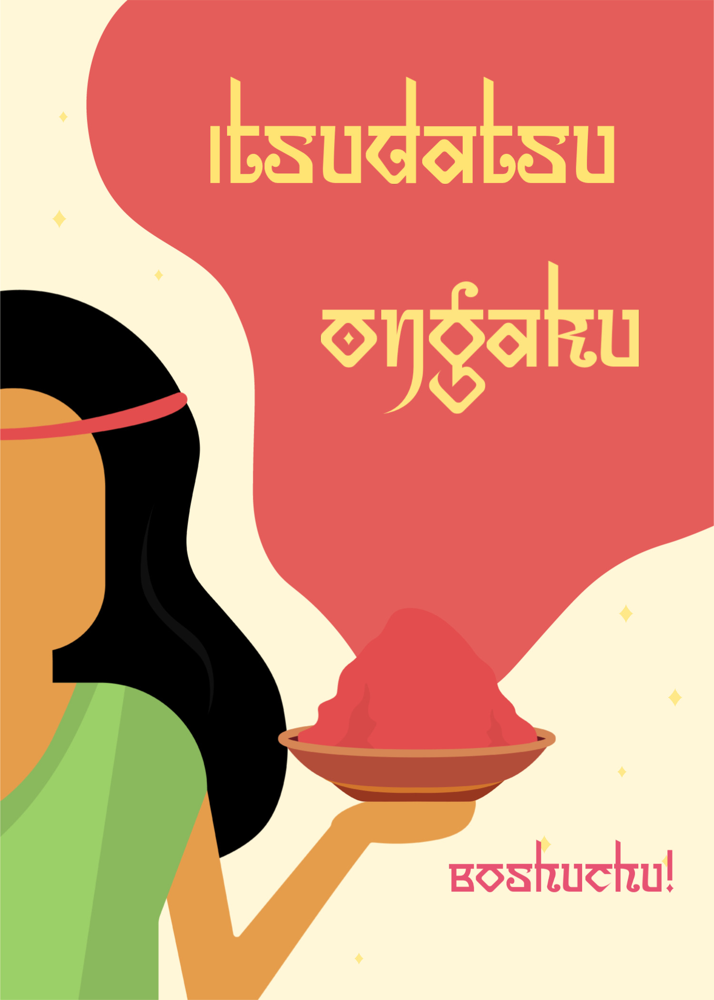
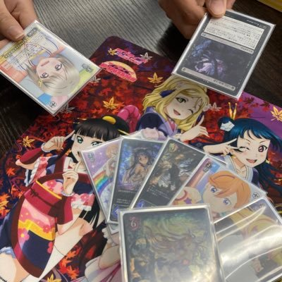
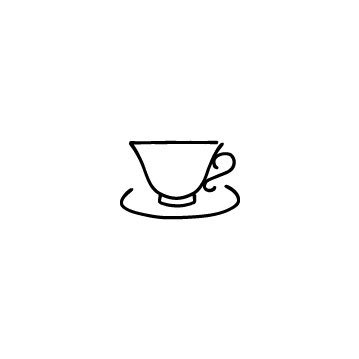
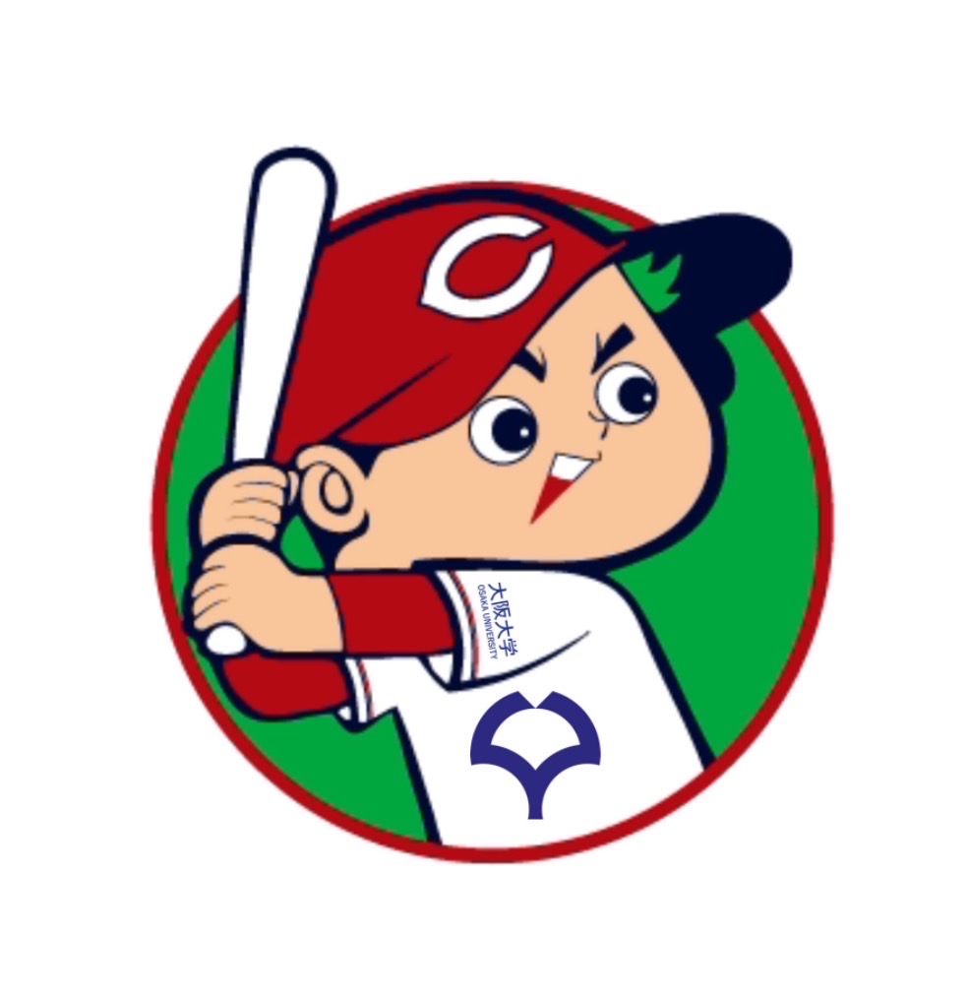

サークル
2024/04/20
大阪大学サークル紹介
2024/03/17
大阪大学お嬢様部
2024/04/24
阪大ミュージアム同好会
2024/04/04
大阪大学色彩検定筋トレサークル

2024/04/24
再履バス同好会
2024/03/12
大阪大学トイレ研究会

2024/04/24
ぽちぽちのつどい

2024/04/17
大阪大学逸脱的音楽研究会
2024/04/01
阪大和漢薬研究会
2024/04/04
大阪大学コントラクトブリッジ部
2024/04/01
大阪大学愛知同好会
2024/04/10
大阪大学コスプレサークル
2024/04/13
大阪大学道路研究会
2024/04/08
阪大ガジェット研究会
2024/03/14
阪大インキャオタクブラスバンド
2024/04/24
大阪大学共通棟研究会

2024/04/02
大阪大学TCGサークル(非公認)
2024/04/26
お化け屋敷研究会

2024/04/04
大阪大学紅茶同好会
2024/03/29
大阪大学ネタツイから卒論まで本にするサークル

2024/04/21
大阪大学カープ応援サークル
2024/04/27
大阪大学SANDSTORM
2023/04/18
大阪大学を畑にする会-學畠会-
2023/04/24
大阪大学歌詞読みサークル
2023/04/28
大阪大学好奇心学問サークル
2023/04/23
大阪大学コーヒー愛好会
2023/05/07
ともだちの家
2023/03/07
大坂大学踊ってみたサークル
2023/04/24